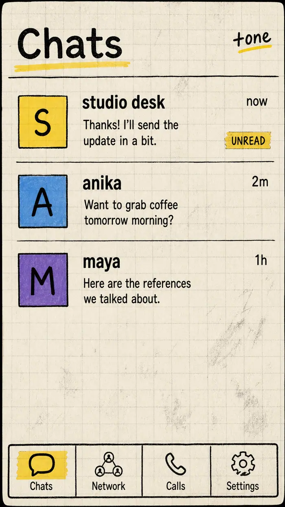
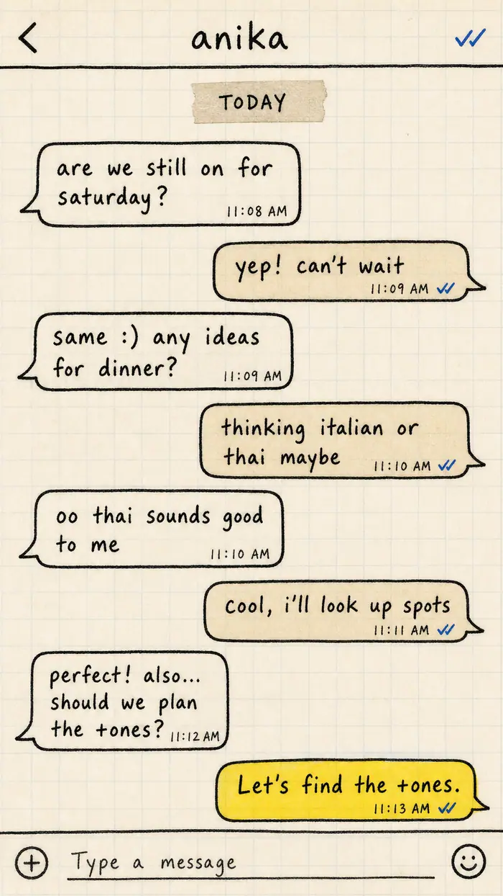
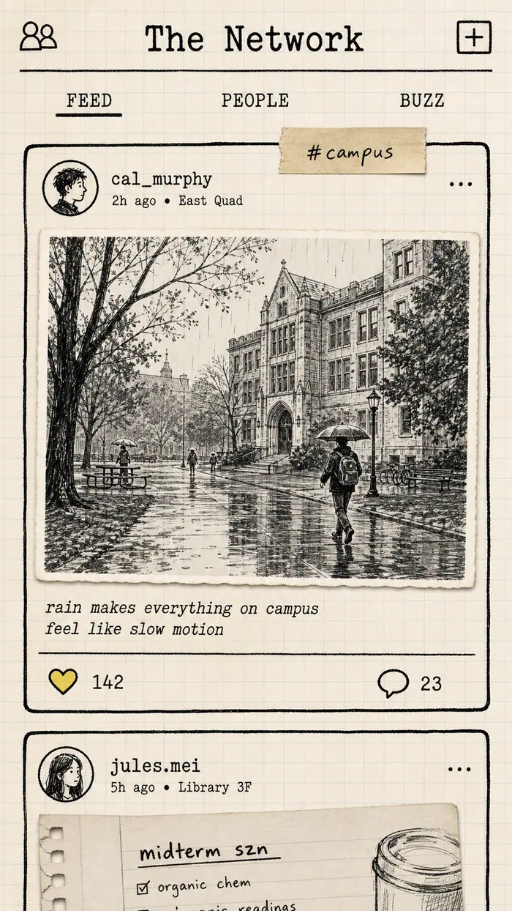
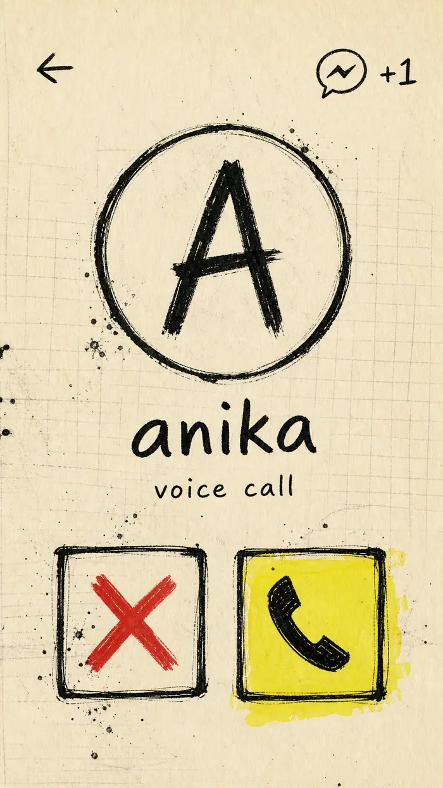
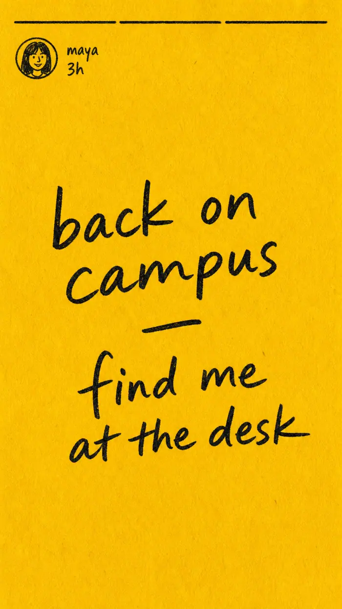

Realtime, not almost
Socket.IO delivery, typing, presence, unread badges, and blue ticks that catch up when someone reconnects.
v1.4 · realtime · iOS / Android / web
A community-based social platform built to help people connect, communicate and find communities around shared interests.
An ink-and-paper messenger: live chats, a worldwide feed, place-based colleagues, stories, polls, WebRTC calls, and a daily AI greeting. Graphite, pulp, people.
www.plusoneco.in/app · Expo · Node · Socket.IO

Inside the notebook




Socket.IO delivery, typing, presence, unread badges, and blue ticks that catch up when someone reconnects.
Replies, reactions, edits, forwards, voice notes with waveforms, images with lightbox, and delete-for-everyone.
First notes from outside your contacts wait in Requests until you accept, delete, or block.
Chat-wide or per-message timers: 30s, 5m, 1h, 24h. Expired messages are hard-deleted and vanish on every device.
Group polls with live bars. Admins rename, promote, and remove — the last admin never vanishes.
WebRTC on the web: ring, accept, mute, hang up. Call history everywhere. Dedicated Calls tab to call back.
Pin chats to the top. Star any message. Global search plus in-chat search that jumps to the match. Archive and mute.
Coloured text statuses, 24-hour expiry, viewed rings, tap-through progress. Paper, then gone.
Username + password, JWT sessions, auto-login, editable about. Password-confirmed permanent deletion with safe cleanup.
The Network
Post text, a cropped photo, and a tag. Likes and threaded comments land live. Filter by trending tags. Delete your own ink.
Once a day
After sign-in, a GLB character speaks — first name, real Open-Meteo conditions, unread and request counts — then signs off with “Let’s find the +ones.”
And the rest of the notebook
Ionicons vectors and 1445 Twemoji. Same glyphs on iOS, Android, and web — no system emoji lottery.
Add to home screen, standalone chrome, paper theme-color, notch-safe padding. Median Android status bar match.
Light, dark, system, and Kinetic Ink — high-contrast manga-tech with cyan actions and red alerts.
Real WebM / M4A recording with permission, upload, and a playable waveform bubble with duration.
Block, mute, request inbox, status privacy, and a danger-zone Delete One ID that transfers shared groups first.
SQLite on a persistent volume, automatic backups every 6 hours and before shutdown. Only real sign-ups — no fake seed data.
Where it runs
Full PWA with live WebRTC media. Open it in two tabs and watch ticks go blue.
Open +oneExpo Go in a minute, or a side-loaded APK from EAS. Same paper UI.
Download APKExpo Go now, TestFlight when you want a standalone build.
Graphite & Pulp
Hairline graphite → 2px ink → 3px bold. Underline inputs, dashed rules, masking-tape chips, highlighter yellow used like a real marker. Bricolage Grotesque / Karla / JetBrains Mono.
Create a username, open a second tab, and send something that actually arrives.